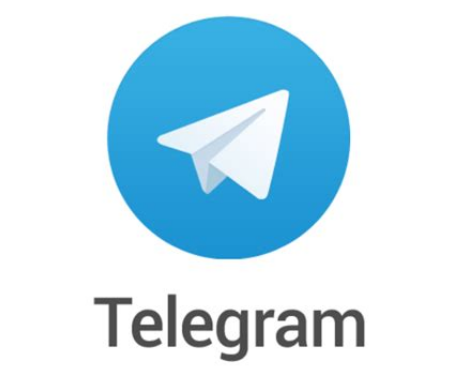
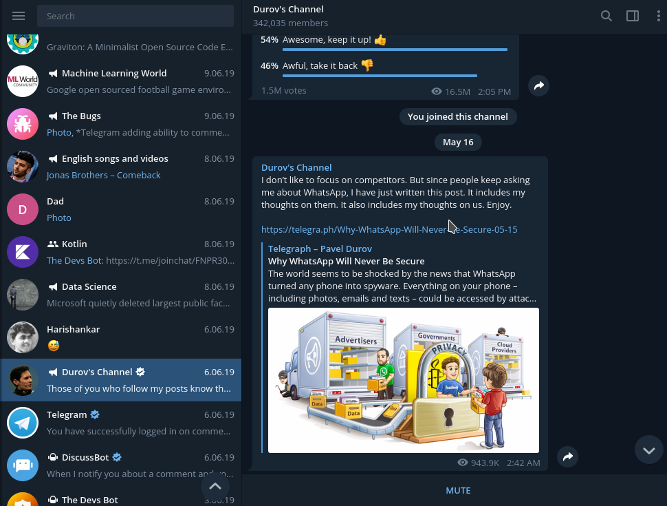
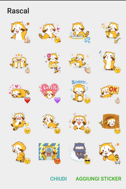
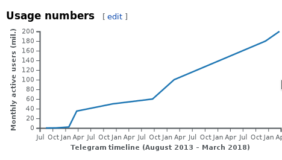
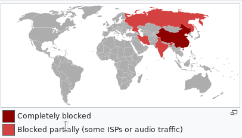
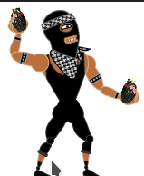

Telegram
Today's world is so advanced in the technologies, that it is creating new things to make the life of people easier. Apps for games, music, apps to study and many more are there which the people of the whole world are using.

Messenging apps are one of them. Many messeging apps are there, whatsapp is the most common of them.
There is another such Messeging app about which a very few people know, that is TELEGRAM. Telegram is often name-dropped in discussions regarding its online privacy and security. It was launched in October, 20, 2013. Telegram's headline features are privacy, speed and security.
Now let us know more about Telegram.
What is Telegram?
Telegram is a cloud based instant messaging app, first started in Russia. It is a open source software. Telegram was designed to be a secure messenger that third-parties wouldn’t be able to intercept.
It was founded by Pavel Durov in the year of 2013. Pavel supports the finance and ideology of Telegram and his elder brother Nikolai Durov created MTProto protocol, which is the basis of this messanger. This is not only open and secure but also allows working with several data-centers.
Telegram is a brilliant combination of security, reliability and speed on any network. These elements make Telegram more outstanding than any other messaging app.
Since its launch in 2013, Telegram has grown in popularity in the secure messaging category (its developers claim the app has over 200 million users), but with controversy. In addition to technical questions about how safe it truly is for users counting on it to keep their messaging activity private, the app has been in the news for political reasons throughout the first half of 2018. The governments of Iran and Russia have banned Telegram for thwarting them from accessing communications conducted on the app by their citizens and others inside their countries.
Features
Telegram doesn't it sounds like Instagram? Anyway it sounds like but the real thing is that Telegram is made with very advanced features in it. Telegram uses your smartphone's phone number as your messenger ID. You can share documents and media files with other Telegram users.
The Telegram app is available for Android, iOS (iPad, iPhone), Linux, macOS and Windows. It also has a website version that you can use through most browsers.
ACCOUNTS
Telegram accounts are tied to telephone numbers and are verified by SMS or phone call. Users can add multiple devices to their account and receive messages on each one. Connected devices can be removed individually or all at once. The associated number can be changed at any time and when doing so, the user's contacts will receive the new number automatically. In addition, a user can set up an alias that allows them to send and receive messages without exposing their phone number.
 Telegram accounts can be deleted at any time and they are deleted automatically after six months of inactivity by default, which can optionally be changed to 1 month and 12 months. Users can replace exact "last seen" timestamps with broader messages such as "last seen recently".
Telegram accounts can be deleted at any time and they are deleted automatically after six months of inactivity by default, which can optionally be changed to 1 month and 12 months. Users can replace exact "last seen" timestamps with broader messages such as "last seen recently".
CLOUD-BASED MESSAGES
Telegram's default messages are cloud-based and can be accessed on any of the user's connected devices. Users can share photos, videos, audio messages and other files (up to 1.5 gigabyte in size per file). Users can send messages to other users individually or to groups of up to 100,000 members. Sent messages can be edited and deleted on both sides within 48 hours after they have been sent. This gives user an ability to correct typos and retract messages that were sent by mistake. According to Telegram's privacy policy, "all data is stored heavily encrypted and the encryption keys in each case are stored in several other DCs in different jurisdictions. This way local engineers or physical intruders cannot get access to user data."

SECRET CHAT
Creating a Secret Chat is a two-click process. This feature enables an end-to-end encryption for the highly secure messaging. The platform developers cailmed that no other third-party can involve in it.
Unlike Telegram's cloud-based messages, messages sent within a secret chat can be accessed only on the device upon which the secret chat was initiated and the device upon which the secret chat was accepted; they cannot be accessed on other devices.
CHANNELS
Telegram secure the data about the channel author . The admin of the channel can obtain general data about the channel. Each message has its own view counter, showing how many users have seen this message. Channels can be created for broadcasting messages to an unlimited number of subscribers. Channels can be publicly available with an alias and a permanent URL so anyone can join. Users who join a channel can see the entire message history. Users can join and leave channels at any time.
STICKERS
Stickers are cloud-based, high-definition images intended to provide more expressive emoji. When typing in an emoji, the user is offered to send the respective sticker instead. Stickers come in collections called "sets", and multiple stickers can be offered for one emoji. Telegram comes with one default sticker set,but users can install additional sticker sets provided by third-party contributors.

VOICE CALLS
In the end of March 2017, Telegram introduced its own voice calls. The calls are built upon the end-to-end encryption of Secret Chats. Connection is established as peer-to-peer whenever possible, otherwise the closest server to the client is used. According to Telegram, there is a neural network working to learn various technical parameters about call to provide better quality of the service for future uses. After a brief initial trial in Western Europe, voice calls are now available for use in most countries.
LIVE LOCATIONS
For either 15 minutes, one hour, or eight hours, Telegram users can share their live location in a chat since version 4.4 released in October 2017. If multiple users share their live location within a group, they are shown on an interactive map. Sharing the 'live location' can be stopped at any time.
SPEED
Telegram is becoming one of the fastest messeging app in the world. Due to its fast messages it has gone popularity among the people.
PRIVATE AND SECURE
Telegram can't access data from the user's account. The reason behind it is that, they are privacy focused on their users. A two-layered encryption keeps the user's data safe from anyone even the government. Telegram is becoming increasingly famous for the privacy-oriented users.
Telegram can prevent your messages from hacker's attacks. While many messenger applications have two layeres of encryption, Telegram contains three layers of encryption, which proves that it is more secure than others.
Infact, Telegram is so confident on their security, that they offer a $300,000 reward for anyone who able to hack in their system.
Users of Telegram

In October 2013, Telegram had 100,000 daily active users. On 24 March 2014, Telegram announced that it had reached 35 million monthly users and 15 million daily active users. In October 2014, South Korean governmental surveillance plans drove many of its citizens to switch to Telegram. In December 2014, Telegram announced that it had 50 million active users, generating 1 billion daily messages, and that it had 1 million new users signing up on its service every week; traffic doubled in five months with 2 billion daily messages. In September 2015, an announcement stated that the app had 60 million active users and delivered 12 billion daily messages. In February 2016, Telegram announced that it had 100 million monthly active users, with 350,000 new users signing up every day, delivering 15 billion messages daily. In December 2017, Telegram reached 180 million monthly active users. In March 2018, Telegram reached 200 million monthly active users.
On March 14, 2019, Pavel Durov claimed that “3 million new users signed up for Telegram within the last 24 hours.” Durov didn't specify what prompted this flood of new sign-ups, but the period matched a prolonged technical outage experienced by Facebook and its family of apps, including Instagram.
Censorship of Telegram
Telegram has faced censorship or outright bans in some countries over accusations that the app's services have been used to facilitate illegal activities, such as protests and terrorism, as well as declining demands to facilitate government access to user data and communications.

Censorship in Russia
On 13 April 2018, Telegram was banned in Russia by a Moscow court, due to its refusal to grant the Federal Security Service (FSB) access to encryption keys needed to view user communications as required by federal anti-terrorism law. The ban has been enforced by blocking over 19 million IP addresses associated with the service. They include many used by Amazon Web Services and Google Cloud Platform, due to Telegram's use of the providers to route messages. However, this led to unintended collateral damage due to usage of the platforms by other services in the country, including retail, Mastercard SecureCode, and Mail.ru's Tamtam messaging service. Users ended up needing to use VPN to access the service as a result of the internet censorship. On 17 April 2018, Russia asked App Store, Play Store and APKMirror to pull Telegram from stores. App Store and Play Store refused the request of Russian government.
On 28 March 2018, Roskomnadzor reportedly sent a legally binding letter to Apple asking it to remove the app from its Russian App Store and block it from sending push notifications to local users who have already downloaded the app.
On December 27, 2018 the biggest Russian web search site Yandex.ru removed telegram.org from their search results.
Censorship in Iran
Telegram was open and working in Iran without any VPN or other circumvention methods in May 2015. In August 2015, the Iranian Ministry of ICT asserted that Telegram had agreed to restrict some of its bots and sticker packs in Iran at the request of the Iranian government. According to an article published on Global Voices, these features were being used by Iranians to "share satirical comments about the Iranian government". In May 2016, the Iranian government asked all messaging apps, including Telegram, to move all Iranian user's data to Iranian servers. On 20 April 2017, the Iranian government completely blocked Telegram's new voice calls, a service that allows individuals to make calls via secure, end-to-end encryption, and keep their conversations private.
In July 2015, it was reported that China blocked access to Telegram Messenger. According to state-owned People's Daily, Chinese human rights lawyers used Telegram to criticize the Chinese Government and the Communist Party of China.
In October 2017, Telegram was inaccessible to users in Pakistan, and as of 17 November 2017, it has been completely blocked as per instructions from PTA, Pakistan's largest ISP, PTCL mentioned this in a tweet to a user.
On December 30, 2017, during anti-government demonstrations across Iran, Telegram has shut down a channel of the Iranian opposition that published calls to use Molotov cocktails against the police, after receiving a complaint from the Iranian government. Pavel Durov explained that the reason for the blocking was a "no calls to violence" and confirmed that challenging the status quo and engaging in political debate were seen as "OK" by the platform, while "promoting violence" was not. The opposition group promised to comply with Telegram rules and created a new channel which amassed 700,000 subscribers in less than 24 hours. On December, 31, the Iranian government announced that Telegram has been "temporarily restricted" in order to "ensure calm and security" after the company said it refused to shut down "peaceful protesting" channels. On January, 13, the app was unblocked by an order of the president Hassan Rouhani, who said that "more than 100,000 jobs had been lost” in Iran as a result of the ban on Telegram. Channels of the opposition remain operational.
In March 2018, Iran's chairman for the Committee for Foreign policy and National Security Alaeddin Boroujerdi announced that Telegram has been targeted to be fully blocked in Iran by 20 April 2018, citing Telegram's role in facilitating the winter protests and the need to promote local apps. President Rouhani agreed with the need to break Telegram's monopoly in Iran. Iranian MP Mahmoud Sadeghi noted that during the two weeks that Telegram was blocked in January 2018, 30 million Iranians (75% of Telegram's users in Iran) did not start using local messaging apps, but instead turned to VPN services to circumvent the block, rendering the blockade ineffective.
Since the end of the riots, Iranian government employs a customized version of Telegram that is under their domain.
Use by terrorists

In September 2015, in response to a question about the use of Telegram by Islamic State of Iraq and the Levant (ISIS), Pavel Durov stated: "I think that privacy, ultimately, and our right for privacy is more important than our fear of bad things happening, like terrorism." Durov sarcastically suggested to ban words because terrorists use them for communication. ISIS recommended Telegram to its supporters and members and in October 2015 they were able to double the number of followers of their official channel to 9,000. In November 2015, Telegram announced that it had blocked 78 public channels operated by ISIS for spreading propaganda and mass communication. Telegram stated that it would block public channels and bots that are related to terrorism.
In August 2016, French anti-terrorism investigators asserted that the two ISIS-directed Jihadists who fatally cut the throat of a priest in Saint-Étienne-du-Rouvray in Normandy, France, and videoed the murder, had communicated via Telegram and "used the app to coordinate their plans for the attack". ISIS's media wing subsequently posted a video on Telegram, showing the pair doing allegiance. A CNN news report stated that Telegram had "become known as a preferred means of communication for the terror group ISIS and was used by the ISIS cell that plotted the Paris terror attacks in November".
In June 2017, the Russian communications regulator Roscomnadzor hinted at the possibility of blocking Telegram in Russia due to its usage by terrorists.
"Privacy Of Users Is The Top Most Priority"
Telegram didn't access data from the user's account, the reason behind it is that they are privacy focused on their users.
When the Russian government had asked Pavel Durove to give them the data of the Telegram users, but he refused to do that. He said that Privacy can't be brought or sold. It can't be a part of buisness, its like the freedom given to the individuals.
It does not disclose where it rents offices or which legal entities it uses to rent them, citing the need to "shelter the team from unnecessary influence" and protect users from governmental data requests. Pavel Durov has said that the service was headquartered in Berlin, Germany, between 2014 and early 2015, but moved to different jurisdictions after failing to obtain residence permits for everyone on the team. Durov left Russia and is said to be moving from country to country with a small group of computer programmers consisting of 15 core members. According to press reports, Telegram had employees in St. Petersburg. The Telegram team is currently based in Dubai.